Cada paso tiene el mismo orden: una imagen, qué hacer y cómo darte cuenta de que quedó bien. No hace falta saber de obra. Hace falta seguir el orden.
Este manual no reemplaza la capacitación de un día: la vuelve repetible. Si la hiciste, acá tenés lo que viste, para el día que montás. Si no, anotate en mercadocasa.com.ar/capacitaciones: salís habiendo levantado una pared con tus manos.
Nunca solo, nunca de canto sin sostén.
Un panel torcido y atornillado arrastra a todos los que siguen.
Se revisa el plano, se revisa el perfil de abajo, y si sigue sin encajar, se pregunta (pág. 26).
Platea u otra fundación, según tu proyecto: la hace un albañil o un constructor. Este manual arranca con la base terminada, curada y nivelada.
La conexión final de electricidad y de gas la hace un matriculado, por norma.
La documentación municipal (plano, permiso y final de obra) va con un profesional habilitado.
Todo llega en bultos cerrados, con una etiqueta afuera que dice qué hay adentro. Antes de firmar el remito, contá los bultos contra la lista.
¿Falta algo o un panel llegó golpeado? Anotalo en el remito antes de firmar, sacale una foto y mandala por WhatsApp el mismo día (pág. 26). Un panel dañado no se monta hasta que te digan qué hacer.
Si se mojan o se apoyan en el suelo, las placas se hinchan o se manchan. Los afectados se separan y se consulta: no se montan sin revisar.
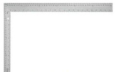
EscuadraPara corroborar las esquinas.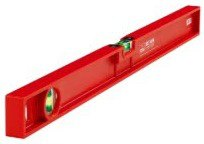
Nivel de 2 mPara corroborar el plomo de la casa.Según el proyecto o el equipo, puede hacer falta alguna herramienta más.
Todo el sistema es un solo tipo de pieza: el panel. Mide 2,47 m de alto y tiene tres capas.
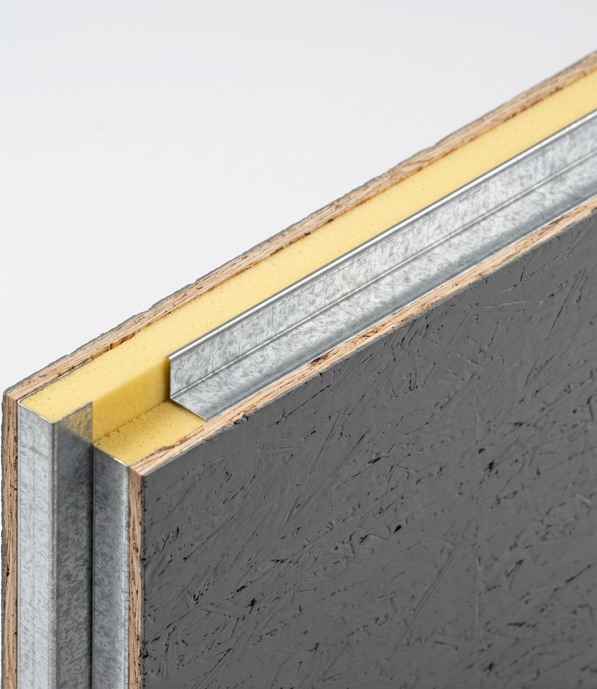
El borde del panel es escalonado: el escalón de uno encastra en el del siguiente. Por eso las juntas cierran sin ruido y te dan hasta 5 mm para nivelar.
Cada una tiene un nombre técnico: está en el glosario (pág. 25) para cuando hables con un profesional.
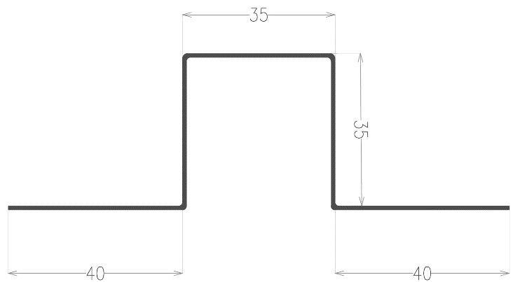
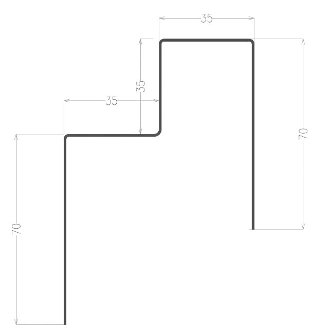
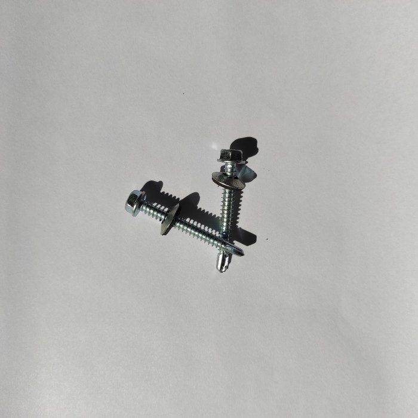
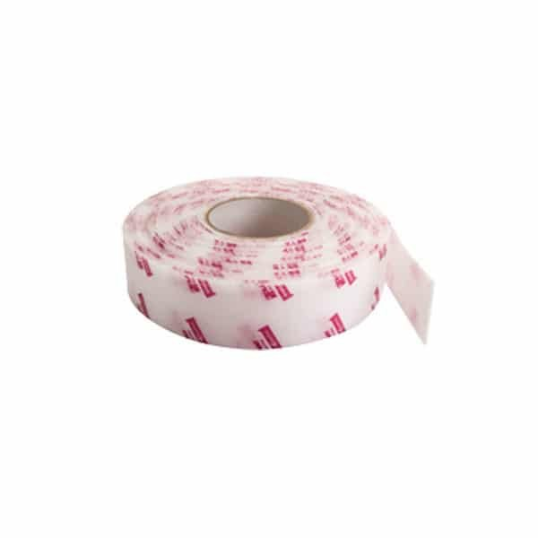
Todos los paneles miden 2,47 m de alto. Lo que cambia es el ancho: eso es la familia, de la A a la G. Cada familia tiene su color de referencia, que vas a ver en los planos.
Sirve para elevar la pared, según el proyecto. Dentro de cada familia hay ajustes de 30, 60, 90 y 120 cm, y se montan arriba de los paneles (paso 7, pág. 22).
El número dice qué trae el panel: ciego, con ventana o con puerta. Letra y número juntos forman el código: A3 es un panel de la familia A con puerta. Medidas de la abertura en cm (ancho × alto).
Dibujos esquemáticos, a la misma escala entre sí. La posición exacta de cada abertura está en tu plano de panelizado.
Un panel A ocupa el mismo largo de pared que cualquiera de estas combinaciones. Vistas en planta, desde arriba.
Los perfiles de esquina son la solución para los encuentros en esquina. El perfil galera resuelve el encuentro del panel con el piso, de panel con panel y de pared con panel (en "T"). Vistas en planta.
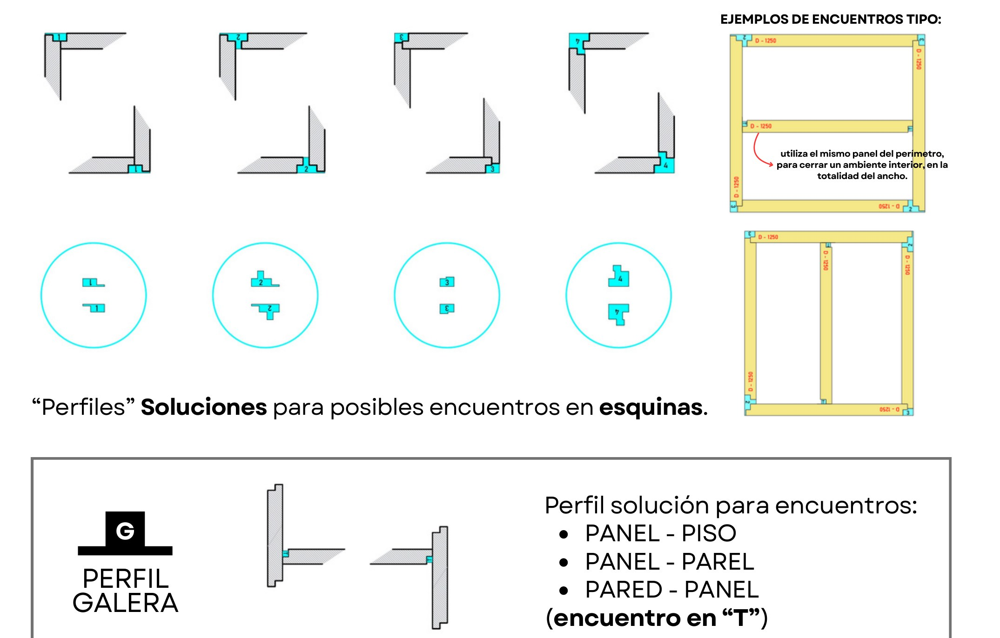
Traen la instalación sanitaria del baño, la cocina o el lavadero. Cada uno tiene su número, de M.S. 1 a M.S. 20. Donde están dibujados los artefactos es donde salen sus conexiones.
Antes de levantarlo, fijate en el plano de qué lado de la pared tienen que quedar las conexiones. Un panel sanitario al revés se desmonta entero.
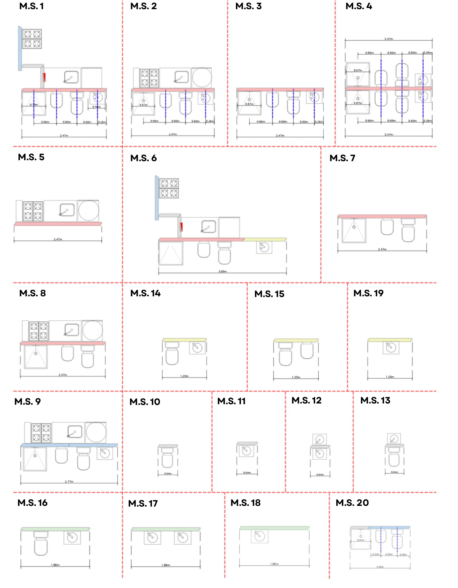
Con el kit vienen varios planos. Para las paredes usás dos:
Primero, una esquina. Asegura la escuadra de toda la casa. Se arma completa: la galera y los dos primeros paneles.
Después, seguí con las galeras en línea con los paneles. Fijás un tramo de galera, montás sus paneles, y pasás al tramo siguiente.
Nunca coloques todas las galeras primero y los paneles después. Por el error humano: una galera mal puesta se descubre recién al montar. Y porque los paneles tienen que poder ajustarse a medida que avanzan.
Según el plano de replanteo. Se marca por la cara exterior, no por el eje central.
Cada pared apoya sobre un perfil fijado a la base. Ese perfil define la posición de todos los paneles: si queda torcido o desnivelado, los paneles lo copian. Es el paso donde más vale la pena ir despacio.
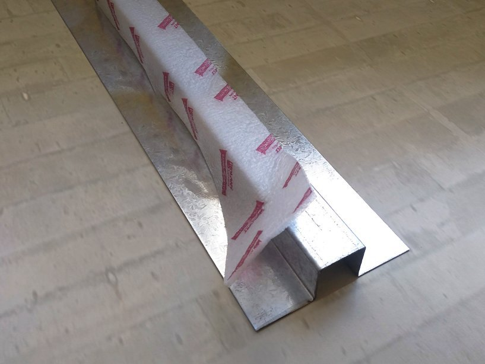
Replantear por el eje central en vez de la cara exterior. La casa queda 3,5 cm más chica por lado y las medidas interiores no dan con el plano. Se vuelve a marcar antes de fijar ningún perfil.
Perforá y fijá el perfil a la base. Las fijaciones varían según el lugar, la condición y el terreno: si tu plano indica anclaje químico, va ese.
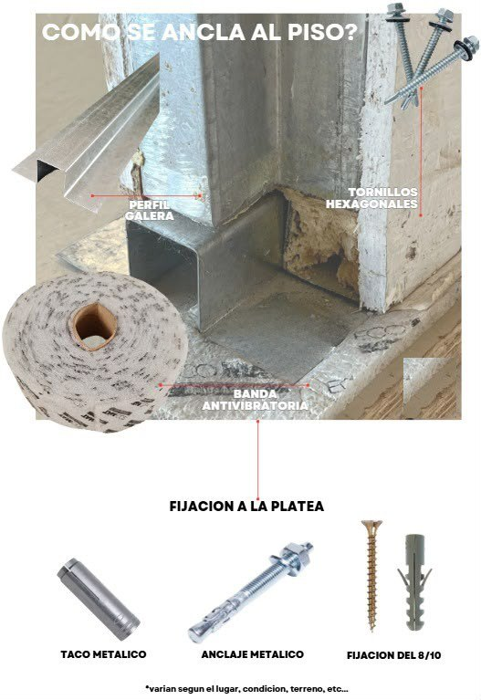
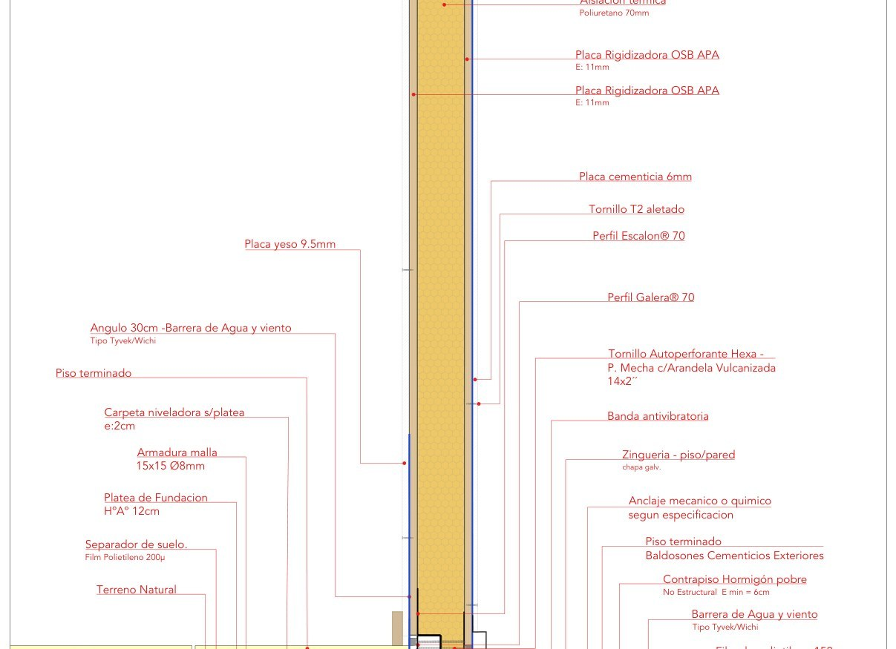
Perfil al revés (cara exterior hacia adentro). El panel no entra, o entra 3,5 cm corrido. Se nota en el primer panel: si no calza sin forzar, antes de tocar el panel revisá el perfil.
La primera pared que levantás es la más difícil, porque no tiene nada que la sostenga. Por eso se arranca en una esquina: dos paneles a 90° se sostienen entre sí. Hasta que eso pase, cada panel va apuntalado.
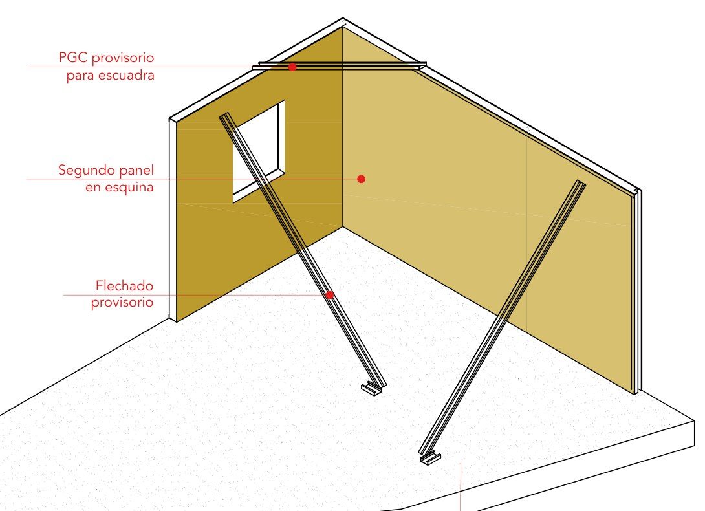
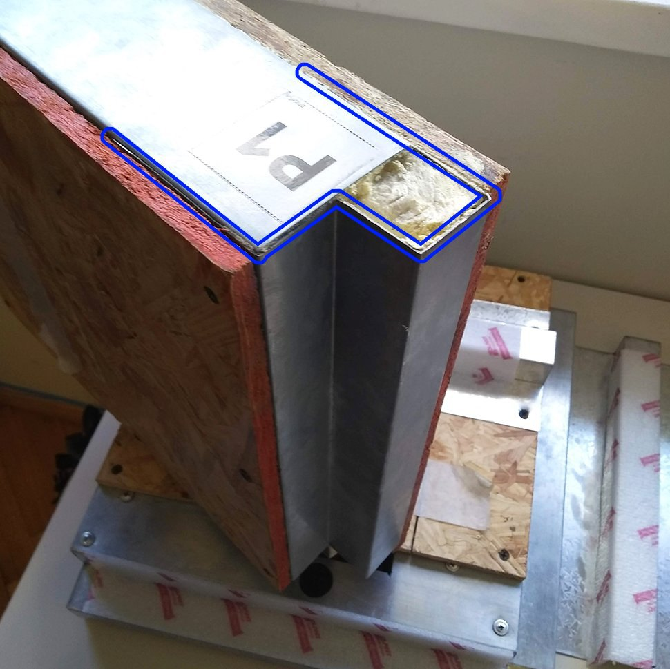
Atornillar el primer panel al perfil antes de tener la esquina. Queda fijo pero torcido, y la esquina no cierra. El primer panel se atornilla con la esquina armada y controlada, no antes.
Es el paso que vas a repetir más veces. El escalón de cada panel entra en el del siguiente, con la banda antivibratoria en el medio, y se fija con tornillos de lado a lado. Una vez que le agarrás la mano, un panel lleva unos minutos.
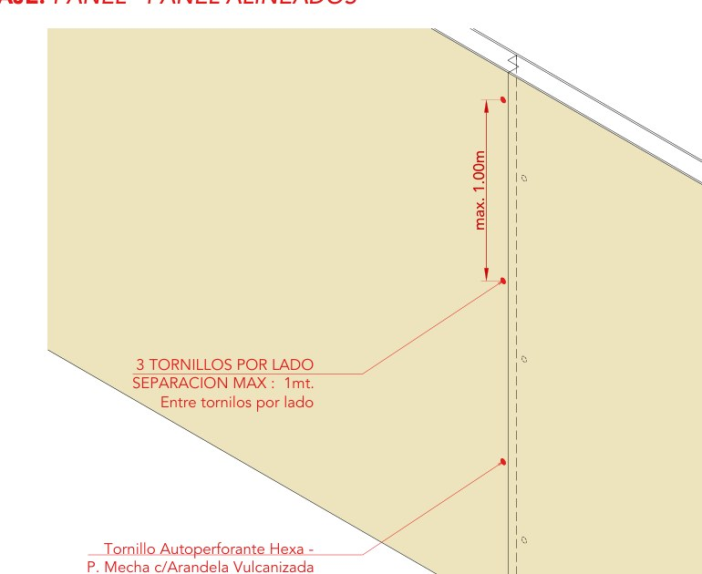
Así queda una junta vista desde arriba: el escalón de un panel dentro del otro, la banda en el medio y el tornillo que los une.
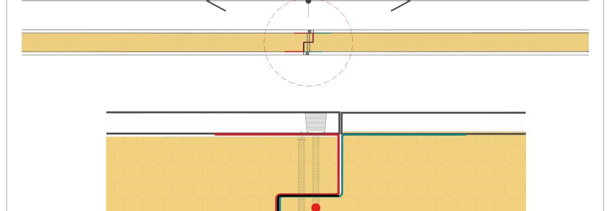
Junta sin banda antivibratoria "porque el panel entraba justo". Después la pared transmite ruido y vibra con el viento, y para corregirlo hay que desatornillar. La banda va siempre, antes de presentar el panel.
Forzar un panel que no entra. Se abolla el marco escalonado. Nunca se golpea: se levanta y se vuelve a presentar. Si sigue sin entrar, revisá el perfil de abajo.
La pared intermedia que llega perpendicular a otra se une distinto: cambian la pieza del medio y el largo del tornillo. Las esquinas, en cambio, se resuelven con los perfiles de esquina (pág. 10).
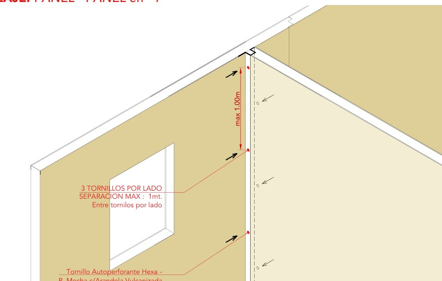
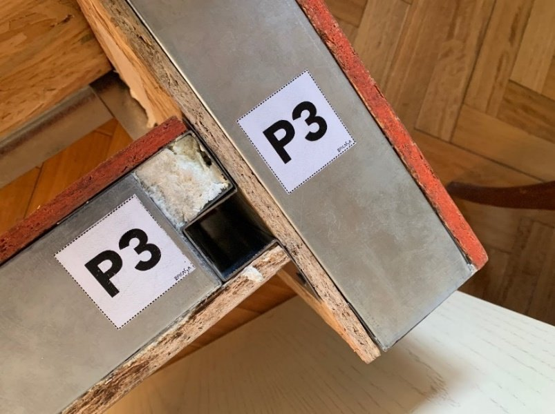
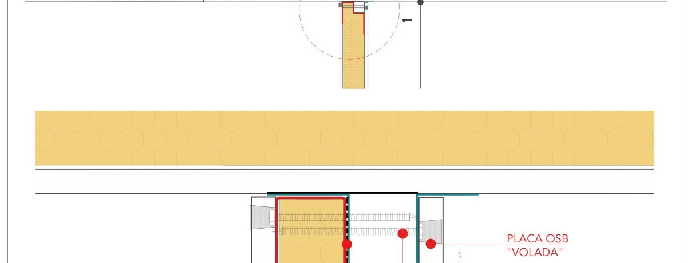
Usar el tornillo corto en la "T". Agarra solo la placa y con el tiempo la pared intermedia "baila". En la "T" van los 14 × 6", sin excepción.
Las aberturas no se "hacen": ya vienen previstas. Los paneles con ventana traen el premarco armado dentro del panel. Lo que hacés vos es proteger el vano y colocar la abertura a plomo.
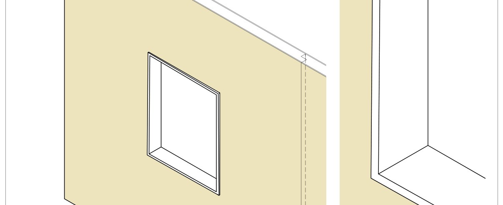
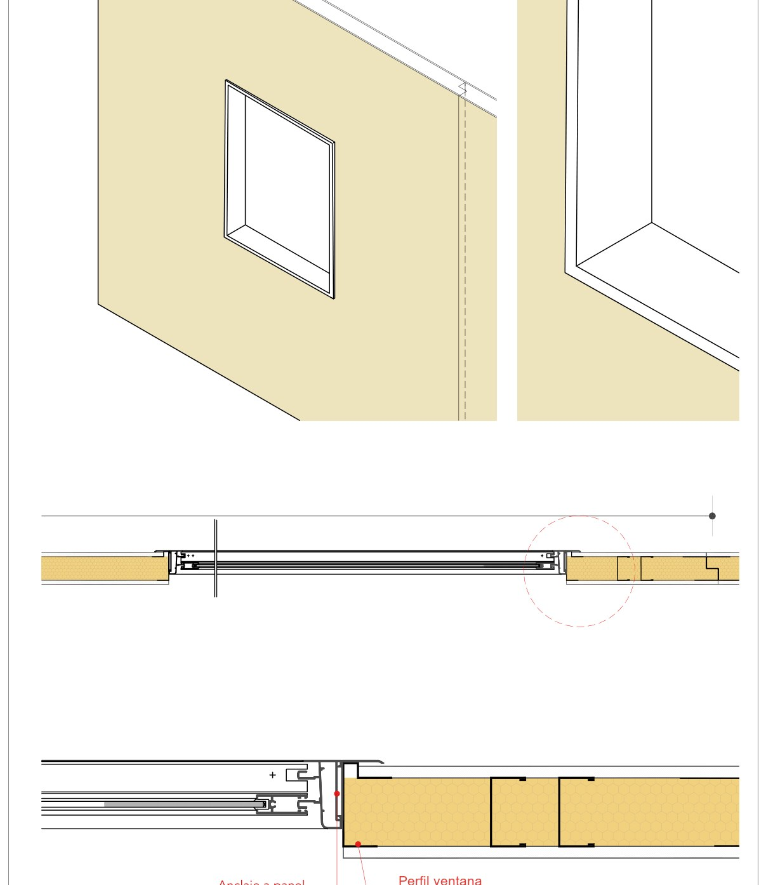
Colocar la ventana sin la barrera "porque se sella después". El sellador no reemplaza a la barrera: a la primera lluvia con viento el agua entra por la jamba. Se saca la ventana y se hace de nuevo.
Las puertas vienen con el marco ensamblado. Se fija al montante del panel: el perfil que cierra el vano.
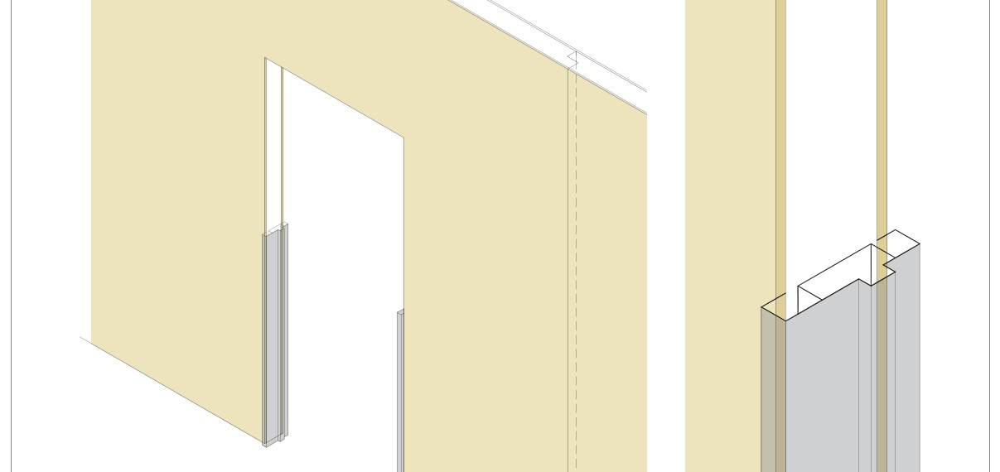
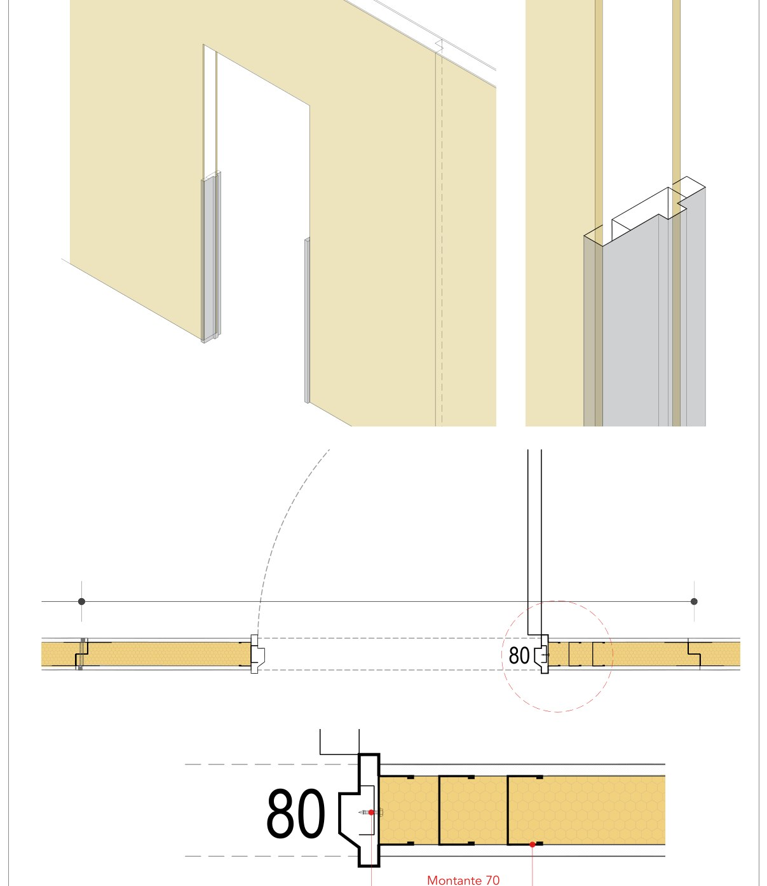
Con las paredes levantadas, se cierra el borde superior de todas, que es donde después va el techo.
El techo no es parte de las paredes: viene según tu proyecto y se coloca siguiendo sus propias instrucciones. Lo que sí es tuyo es dejar el borde superior de las paredes terminado: solera, barrera y zinguería. Si vas a colocar el techo vos, hacelo apenas cierres el perímetro: adentro queda un lugar seco para seguir trabajando.
Este manual termina donde terminan las paredes. Lo que sigue tiene su orden, y en varios pasos entra un profesional. Este es el orden que evita volver atrás.
| # | Qué | Qué tener en cuenta | Quién |
|---|---|---|---|
| 1 | Techo | Según tu proyecto y sus instrucciones. Va apenas cerrás el perímetro: protege todo lo que sigue. | Profesional o vos, según el techo |
| 2 | Zinguería | Babetas, tapas y canaletas, con banda en cada apoyo y sellador en cada solape. | Vos |
| 3 | Aberturas exteriores | Paso 6. Con el techo puesto, la casa queda cerrada. | Vos |
| 4 | Conexión de instalaciones | Agua, cloaca, electricidad y gas a la red, cableado, tablero, habilitaciones. | Matriculado |
| 5 | Revestimiento exterior | La pintura de frentes PU viene con el kit. El revestimiento (placa cementicia, base y terminación) no viene en el kit: lo comprás aparte. | Vos |
| 6 | Emplacado interior | Placas de yeso sobre la cara interior, masillado, cielorraso. No vienen en el kit. Recién con las instalaciones probadas. | Vos |
| 7 | Aberturas interiores | Paso 6, puertas. | Vos |
| 8 | Terminaciones | Pisos, sanitarios, cocina, pintura. A tu ritmo. | Vos |
| 9 | Final de obra | Documentación municipal. | Profesional habilitado |
Seguir cuando algo no cierra. Un panel que no encaja, una diagonal que no da, una burbuja que no centra: son avisos. El sistema es preciso a propósito; cuando algo no entra, el error está antes. Volvé un paso.
Todos los que están acá los vimos en obra. Ninguno es grave si se agarra a tiempo; casi todos son caros si se descubren con la pared tapada.
| El error | Cómo te das cuenta | Cómo se corrige | Paso |
|---|---|---|---|
| Colocar todas las galeras primero y los paneles después | Los paneles no ajustan y un error de una galera aparece recién al montar | Galera y paneles van juntos, de a un tramo, desde la primera esquina | Orden |
| Replanteo por el eje central en vez de la cara exterior | La casa queda 3,5 cm más chica por lado; las medidas interiores no dan con el plano | Volver a marcar antes de fijar ningún perfil | 1 |
| Perfil galera al revés | El primer panel no calza o queda corrido | Desanclar, girar el perfil (los triángulos para afuera), volver a fijar | 2 |
| Perfil galera desnivelado | Los cantos superiores de los paneles van "escalonando" | Volver a nivelar el perfil antes de seguir; nunca forzarlo con el anclaje | 2 |
| Sin banda antivibratoria en una junta o en el perfil | Ruido y vibración con viento; se ve metal contra metal | Desatornillar la junta, pegar la banda, volver a atornillar | 2 · 4 |
| Panel al revés (cara exterior hacia adentro) | La etiqueta o las salidas de un panel sanitario quedan del lado equivocado | Se desmonta entero; por eso se chequea la etiqueta antes de levantarlo | 3 · 4 |
| Atornillar fuera de plomo | Al quinto panel, la pared "se va" o la ventana no entra | Aflojar, empujar hasta la burbuja, apretar. Controlar cada panel antes del primer tornillo | 3 · 4 |
| Menos de 3 tornillos por lado o sin arandela | La junta abre al empujar; la chapa deformada alrededor del tornillo | Completar a 3 por lado, separación máxima 1 m, siempre con arandela | 4 |
| Tornillo corto en la "T" | La pared intermedia se mueve al empujarla | Reemplazar por los 14 × 6" del kit | 5 |
| Ventana sin barrera de agua en la jamba | Entra agua con la primera lluvia con viento | Sacar la ventana, envolver el vano con la barrera, volver a colocar y sellar | 6 |
| Forzar un panel que no entra | Se abolla el marco escalonado | Nunca se golpea: se levanta y se vuelve a presentar. Si sigue sin entrar, revisar el perfil de abajo | 4 |
| Paneles apilados en el suelo o destapados | Placas hinchadas o manchadas antes de montar | Separar los afectados y consultar; no se montan sin revisar | Antes |
Sobre este manual. Versión 1.1 extensa, octubre de 2026: el mismo contenido técnico de la 1.0, con más imágenes. Si encontraste algo que acá no está o que no funcionó así, contánoslo por WhatsApp. Ante cualquier diferencia con los planos de tu proyecto, mandan los planos.
Para cuando hables con un albañil, un matriculado o con nosotros.
| Perfil galera | El perfil de arranque. Riel de acero galvanizado de 70 mm fijado a la base (o parado, en una "T") sobre el que apoya el panel. |
| Marco escalonado | Perfil Escalón. Borde perimetral del panel; encastra uno en otro. Estanqueidad y hasta 5 mm de nivelación. |
| Perfil de esquina | Perfil que resuelve el encuentro de dos paredes en esquina. |
| Solera de remate | Solera 70. Perfil en "U" del canto superior de la pared y de los premarcos. |
| Panel | Unidad de pared: perfil de acero galvanizado, poliuretano inyectado y placa OSB estructural en las dos caras. 2,47 m de alto; el ancho depende de la familia (A a G). |
| Familia y variante | La familia es el ancho del panel (A a G); la variante, si es ciego o trae ventana o puerta (1 a 7). Juntas forman el código: A3. |
| Panel de ajuste de altura | Eleva la pared según el proyecto. Hay de 30, 60, 90 y 120 cm en cada familia. |
| Panel sanitario (M.S.) | Panel con la instalación sanitaria de baño, cocina o lavadero. Numerados de M.S. 1 a M.S. 20. |
| Planos de replanteo y de panelizado | El de replanteo dice dónde va cada pared sobre la base; el de panelizado, qué panel va en cada lugar. |
| Tornillo autoperforante hexagonal | Punta mecha (sin agujero previo), cabeza hexagonal, arandela vulcanizada. 14 × 3" en juntas y esquinas; 14 × 6" en "T". |
| Banda antivibratoria | Cinta de espuma autoadhesiva que se pone entre metal y metal. |
| Barrera de agua y viento | Membrana que deja pasar el vapor y no el agua. Envuelve jambas y cantos. |
| Fijaciones a la base | Taco metálico, anclaje metálico, tarugo con tornillo o anclaje químico. Varían según el lugar, la condición y el terreno. |
| Aplomar / nivelar | Aplomar: dejar vertical. Nivelar: dejar horizontal. Ambos con el nivel de 2 m. |
| Puntal provisorio | Tirante inclinado que sostiene un panel hasta que la esquina lo fija. |
| Jamba · dintel · montante | Lados del vano · parte de arriba del vano · perfil vertical del panel donde se fija un marco. |
| Babeta | Zinguería que cubre el encuentro pared–techo para que no entre agua. |
Recorrelo con alguien más. Lo que no se pueda tildar, se corrige antes de que entre el techo, el matriculado o el emplacado.
Escribí al WhatsApp de Mercado Casa con una foto del paso en el que estás. Te respondemos por ahí y, si hace falta, con un video, una videollamada o una visita técnica.
+54 9 11 7905-9540